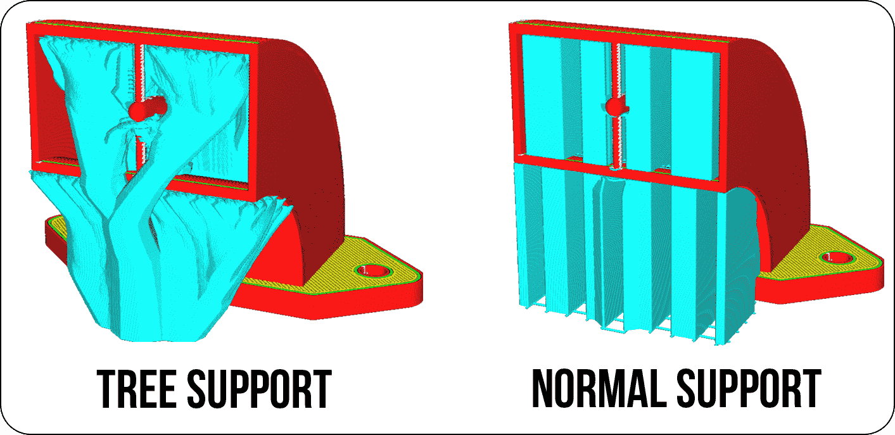

Introduction of 3D-Printing
3D printing, also known as additive manufacturing, is a process of creating three-dimensional objects from a digital file. It works by adding material layer by layer until the object is complete, unlike traditional subtractive manufacturing methods that remove material. This technology has revolutionized various industries, including manufacturing, healthcare, and even fashion, by enabling rapid prototyping, customization, and the production of complex geometries that would be difficult or impossible to achieve with traditional methods.
3D printing is technology that has gained significant traction in various fields over the past few years. It works by creating three-dimensional objects layer by layer from a digital file, using materials such as plastics, metals, ceramics, and even organic materials like food or living cells.
3D printing begins with creating a digital model of the object using computer-aided design (CAD) software or by 3D scanning an existing object. The digital model is then sliced into thin horizontal layers by slicing software, and the 3D printer builds the object layer by layer, following the instructions from the sliced file.
There are several types of 3D printing technologies, including Fused Deposition Modeling (FDM), Stereolithography (SLA), Selective Laser Sintering (SLS), Direct Metal Laser Sintering (DMLS), and Electron Beam Melting (EBM). Each technology has its advantages and limitations in terms of resolution, speed, material compatibility, and cost.
Types of Supports in 3D Printing:
Supports are structures that are printed alongside the main object to support overhanging or complex features during printing. There are several types of supports available in 3D printing, including grid, line, and tree supports. Tree supports, in particular, are gaining popularity due to their sustainability and efficiency. They use less material and are easier to remove compared to traditional supports, reducing waste and post-processing time. Choosing the right type of support is crucial for achieving high-quality prints with minimal cleanup.

About Fracktal works:

Specifications:
- Bed Size:250 mm x 250 mm x 300 mm
- Print Technology: Fused Deposition Modelling (FDM)
- Filament Diameter: 1.75mm
- Nozzle Diameter: 0.4mm
- Nozzle Temperatures:Upto 240 °C
- Bed Temperature: Upto 110 °C
- Compatible Materials:ABS, PLA, Tough PLA, PLA+, PETg, PVA, PVA+,BVOH,Polycarbonate, Nylon 12*, Carbon Fiber Nylon*, Carbon Fiber PLA
- Supported File Types: STL, OBJ
- File Transfer :USB Pen Drive, WIFI, LAN
Hands-On with the Fractal Works Extended Printer
After the introductory session, our mentor led my group to the 3D printer, where we were able to see the machine up close and learn about its components. The 3D printer was a fascinating piece of technology, with various parts working together to create three-dimensional objects layer by layer. The mentor explained the basic concept of 3D printing, emphasizing how it differs from traditional manufacturing methods and highlighting its advantages in terms of speed, customization, and complexity of shapes that can be produced.

The machine contains a bed to hold the forming structure. Then there is a nip from which the melted filament comes and forms the structure by tracing over it multiple times.
Some projects in the machine may require many hours to complete it's formation. A sudden break in the process may also cause failure in the complete project.
The nip is to be cleaned with the help of the needle to avoid the blockages during the printing.